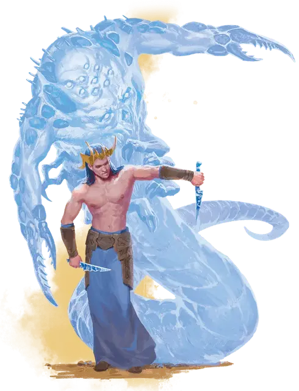

Вдохновлённый
Inspired
Средний Гуманоид (Человек), законно-злой

Класс Доспеха 12 (15 с магическим доспехом)
Хиты 40 (9к8)
Скорость 30 футов
| мод | спас | ||
|---|---|---|---|
| СИЛ | 11 | +0 | +0 |
| ЛОВ | 14 | +2 | +2 |
| ТЕЛ | 10 | +0 | +0 |
| мод | спас | ||
|---|---|---|---|
| ИНТ | 16 | +3 | +5 |
| МДР | 10 | +0 | +2 |
| ХАР | 16 | +3 | +3 |
Навыки Обман +7, Проницательность +2, Убеждение +7
Сопротивление урону психическая энергия
Иммунитет к состояниям очарование, испуг
Чувства пассивное Восприятие 10
Языки Общий, Куори
Опасность 2 (450 опыта)
Бонус мастерства +2
Особенности
Двойственность разума. Вдохновлённый имеет преимущество на спасброски Мудрости.
Врожденное колдовство. (Псионика). Базовой характеристикой врожденного колдовства вдохновлённого является Интеллект (Сл спасброска 13). Он может накладывать следующие заклинания без использования материальных компонентов:
• Неограниченно:волшебная рука, злая насмешка (см «действия» ниже)
• 1/ день каждое: очарование личности, сглаз, диссонирующий шепот, удержание личности, доспехи мага.
Сосуд Куори. Вдохновленные - это сосуды для духов куори, позволяющие куори проявлять часть своей силы, пока сосуд находится в их владении. Вдохновленный может получить различные преимущества. Эти преимущества зависят от куори.
Хашалак.
Внушение (3/день). Вдохновленный может накладывать заклинание внушение (Сл спасброска 13), без затрат материальных компонентов.
Каларак.
Всевидящий. Вдохновенные не могут быть застигнуты врасплох.
Магический глаз (3/день). Вдохновленный может накладывать заклинание магический глаз, без затрат материальных компонентов.
Цукора.
Ужас (1/день). Вдохновленный может накладывать заклинание ужас, без затрат материальных компонентов.
Действия
Мультиатака. Вдохновлённый совершает две атаки хрустальным кинжалом. Он может заменить одну атаку злой насмешкой.
Хрустальный кинжал. Рукопашная атака оружием: +4 к попаданию, досягаемость 5 футов, одна цель. Попадание: 4 (1к4+2) колющего урона плюс 10 (3к6) урона силовым полем.
Злая насмешка (Заговор). Вдохновенный выпускает цепочку оскорблений, смешанных с тонкими чарами, в одно существо, которое он может видеть в пределах 60 футов. Если цель может слышать вдохновлённого, то она должна преуспеть в спасброске Мудрости Сл 13, иначе получит 2 (1к4) урона психической энергией и следующий бросок атаки до конца своего следующего хода совершит с помехой.
Описание
Правители далекой Сарлоны известны как Вдохновленные. Говорят, что эти благородные семьи связаны с небесными духами, которые направляют и наделяют их силой, однако истина гораздо темнее. Вдохновленные - это смертные хозяева духов ночных кошмаров Даль-Куор, и они полностью ответственны за плохие сновидения.
Любой спящий гуманоид, может добровольно служить сосудом куори. Но вдохновленные Сарлоны - это люди, рожденные быть такими сосудами. Они не выбирают свою судьбу, а потому они не могут сопротивляться куори. Физически они напоминают калаштара, обладая почти сверхъестественной красотой.
Большинство людей Пяти Наций слышали о Вдохновлённых лордах в Риедре, но никогда не думали, что вдохновенные распространены по всему Кхорвайру. Нищие и генералы, мэры и купцы - все они могли быть тайными слугами Тьмы Грез. Такие вдохновленные должны охотно принять куори, но у Тьмы Грез есть большой опыт в плетении снов, которые могут убедить смертных отказаться от своих тел.